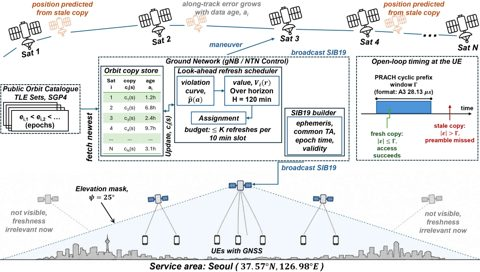

Which Satellite to Refresh Next? Look-Ahead Scheduling of Orbit Data for Timing Advance in LEO Networks
International Conference on Information Networking (ICOIN), 2027 · Nha Trang, Vietnam
To appear